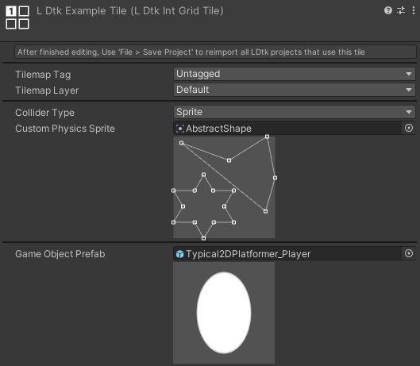

IntGrid Tile
In the importer's IntGrid section, you can assign Int Grid Tiles, which has options for tags, layers, custom collision, rendering colors, and GameObjects.
Make some in the IntGrid section.

Tilemap Tag/Layer/Material
Sets the tag, layer, and physics material of this tile's tilemap GameObject in the import process.
For an IntGrid layer, if other tile assets have any differing tag, layer, or physics material, then they will be split into separate tilemaps.
This can allow for customized grouping of certain IntGrid values in Tilemaps.
Optional; Use if customizing tags/layers/materials is necessary. Otherwise, leave as Untagged/Default/None.
Collider Type
- None: No collision.
- Renders a square if rendering IntGridValues is enabled.
- Sprite: Use a sprite's physics shape(s) for collision.
- Renders the sprite if rendering IntGridValues is enabled.
- Grid: Square collision.
- Renders a square if rendering IntGridValues is enabled.
Custom Physics Sprite
The collision shape is based on the physics shape(s) of the sprite which is previewed here for convenience.
Commonly useful for slopes, etc.
Game Object Prefab
Spawns a prefab at this tile.
Optional; Use this when a GameObject is more fit for a situation.
Sprite Collider
When the collider type is set to Sprite, you can use a sprite's physics shape(s) for collision.
To make a custom physics shape on a sprite, go to the Physics Shape section of a sprite editor window.